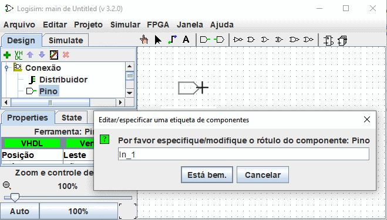

Etiquetas auto-numeradas
Esta opção permite colocar componentes com etiquetas auto-numeradas, por exemplo Led_1, Led_2... . Para utilizá-la, proceder como a seguir :
Selecione uma ferramenta no navigation panel, por exemplo um Pino, e mova-o para a superfície de trabalho e antes de clicar para soltá-lo pressione a tecla L.
Introduza um nome de etiqueta que termine com um número, por exemplo, "In_1".
Enter a label name ending with a number, e.g. "In_1".

De agora em diante, quando você soltar componentes deste tipo, eles serão automaticamente rotulados com um incremento. Quando a opção é ativada, a sombra dos componentes antes da sua colocação é colorida de rosa.
É possível activar esta opção para diferentes componentes simultaneamente.

Para desactivar, proceda da mesma forma que para a activação, mas utilize a tecla A. Se você ativou a auto-rotulagem em componentes de um tipo diferente. Deve-se desativá-lo individualmente para cada tipo de componente.
Touches et fonctions associées
L : Ativar a função e definir/modificar a etiqueta
T : Alternar a visibilidade da etiqueta
H : Definir a visibilidade da etiqueta como falsa (esconder)
V : Definir a visibilidade da etiqueta como verdadeira (mostrar)
A : Termina a função de etiqueta auto-numerada.
Próximo: Colocação de componentes em uma matriz.